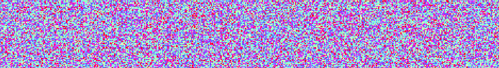

Visualising Algorithms with Python
Posted on Tue 29 January 2019 in python

Continue reading
One of the themes for this term is algorithm optimisation, so I've been looking over industry standard sort and search algorithms, ever trying to minimise the 'Big O'. A classmate shared these sort visualisations by morolin, which really help to visualise the differences in efficiency between the algorithms. While these visualisations were created in Golang, they have since been translated in to Python by Kirk Kaiser.
Let's face it, writing code to sort a list isn't particularly interesting, so I wanted to see if I could impliment and visualise my own sort algorithm(s). The next step of course, was to see if similar visualisations could be created to demonstrate search algorithms..
Continue reading